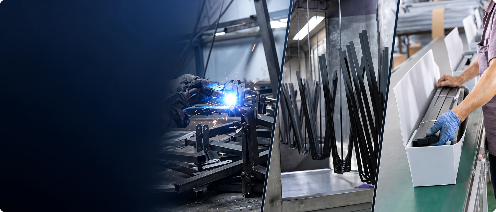
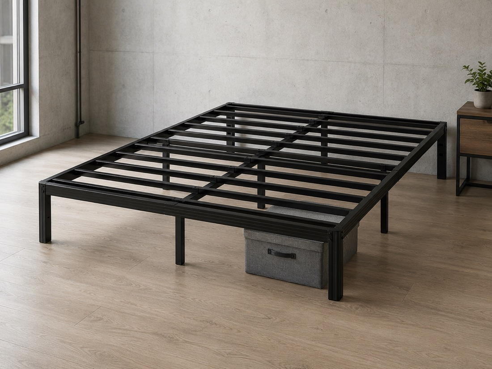
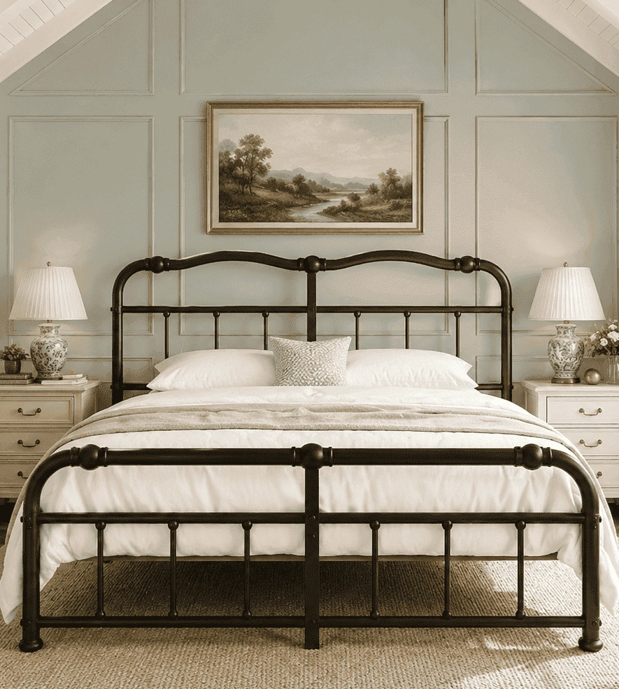
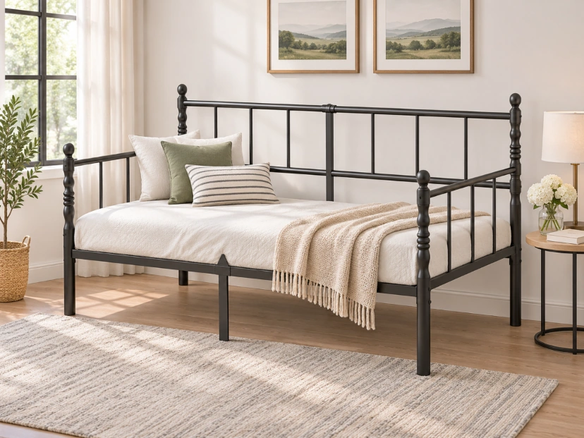
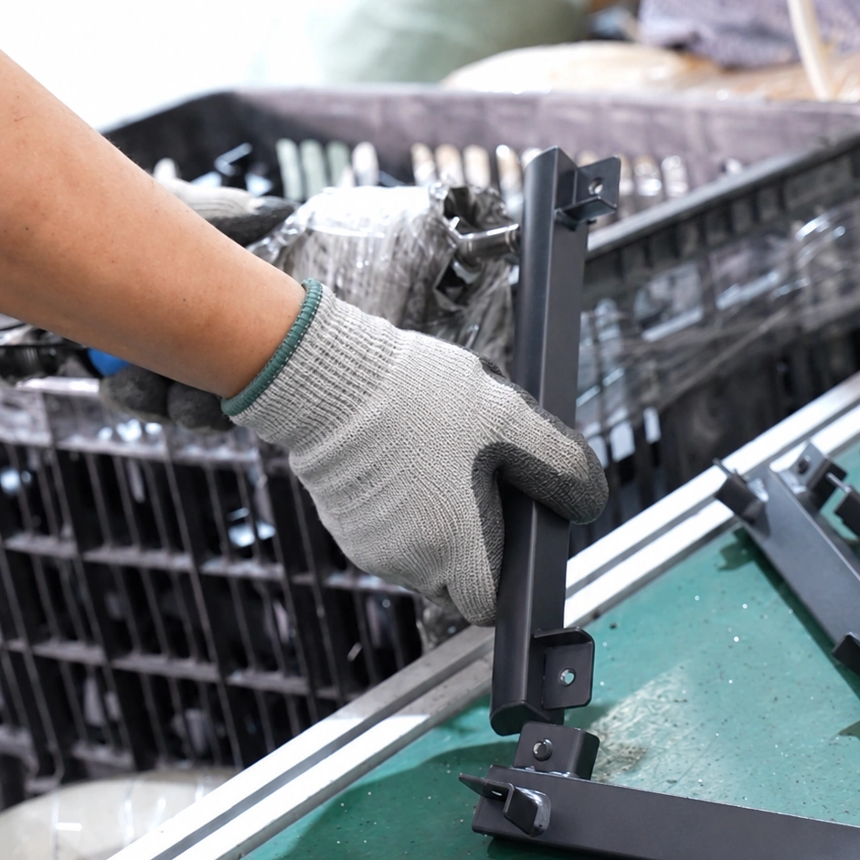
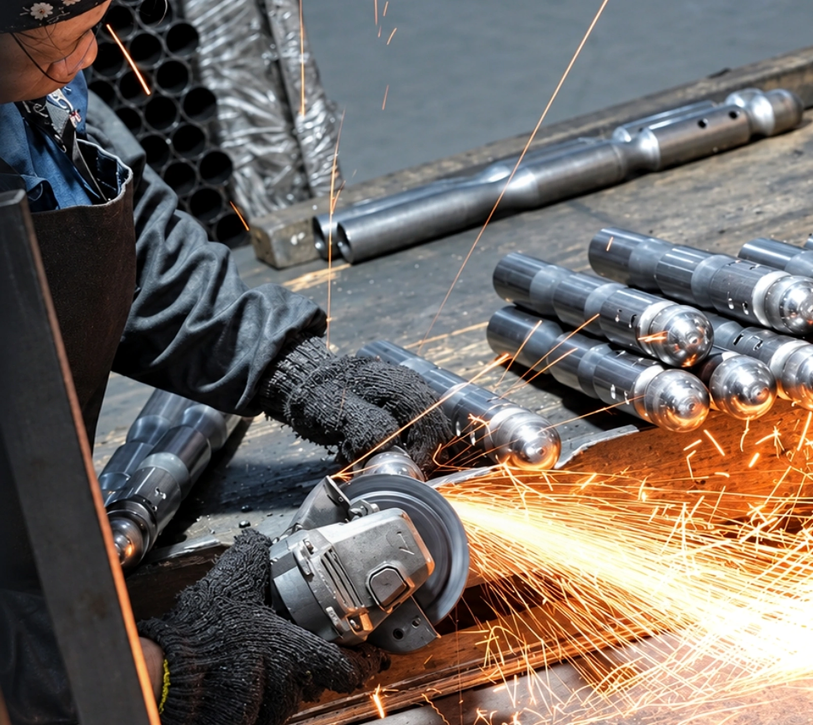
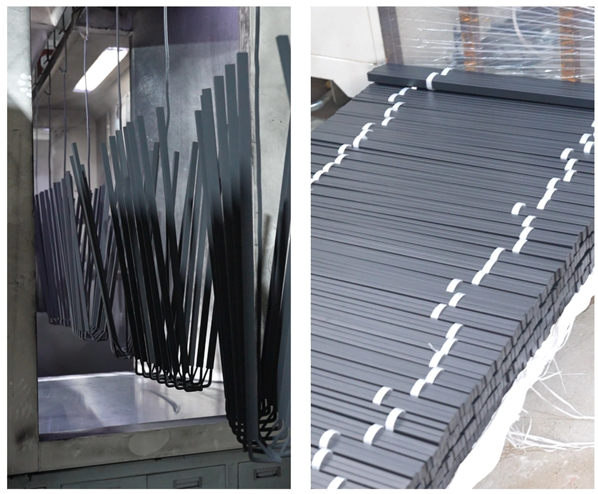
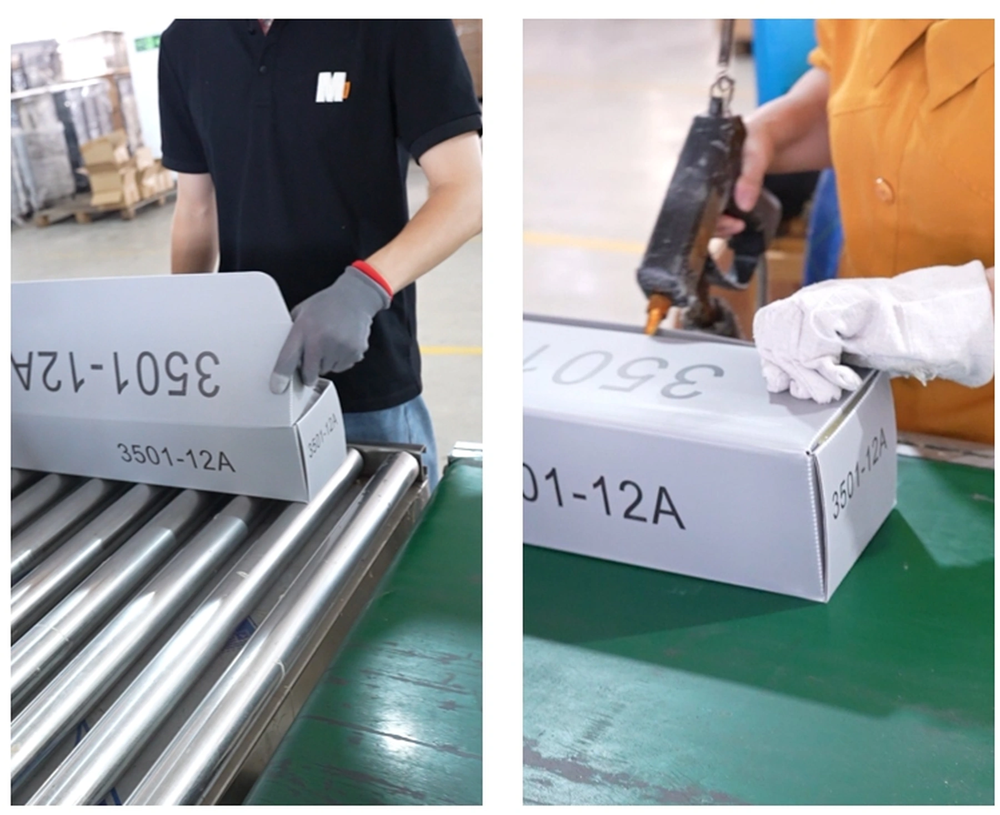
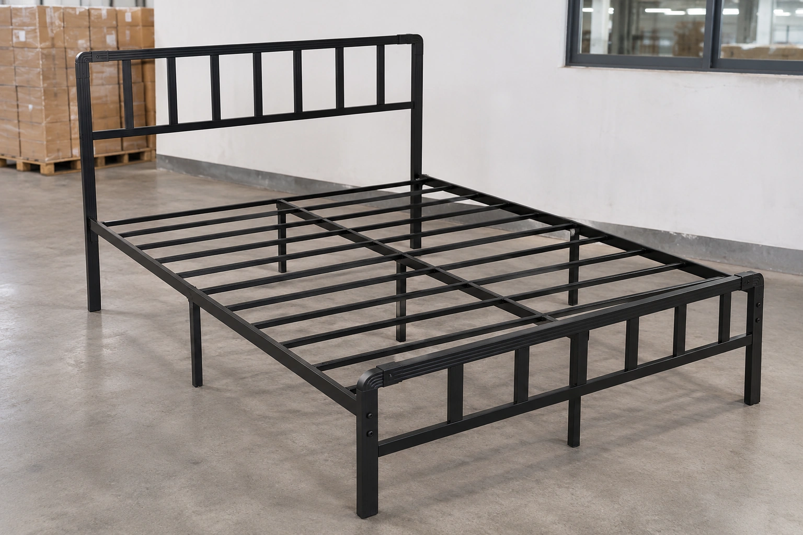

Metal Platform Bed Frames
Steel platform structures for furniture retail, mattress distribution, rental and replenishment channels.
Apexnix is a metal bed frame manufacturer in China, supplying metal bed frames and bamboo bed frames for wholesale, OEM/ODM and high-volume commercial sourcing. Adapt structures, finishes and flat-pack packaging to your market and distribution requirements.
For importers, distributors, retail chains, mattress companies, private-label brands and project buyers.


PROVEN MANUFACTURING SCALE
Choose from established Apexnix structures or use a suitable model as the starting point for market-specific specifications, finishes and packaging. Final details are confirmed according to the selected model and order requirements.
Steel platform structures for furniture retail, mattress distribution, rental and replenishment channels.

Decorative metal bed options with different profiles, finishes and positioning for market-facing collections.

Practical multi-use daybeds, available for residential setup, hospitality accommodation and large project procurement.

Natural-material bed frame options for furniture collections requiring a warmer and more distinctive visual identity.

Structure, dimensions, finish, configuration, branding and packaging can be reviewed from a defined product brief.
A sourcing decision needs more than a factory claim. Apexnix supports the core in-house stages required to turn metal components into finished, packed bed frames, including tube processing, welding, surface preparation, coating, assembly preparation and flat-pack packing. For the selected product, you can review relevant structure and dimensions, finish requirements, hardware and component organization, packaging configuration and a model-based loading estimate before order confirmation.




You can begin with an established Apexnix structure or share a more differentiated product brief. The suitable route depends on the target market, required specifications, estimated volume and development scope.
Review dimensions, height, finish, selected structural details, hardware configuration, labels or packaging around an existing product platform.
Share a reference product, drawing or requirement brief for feasibility review, sample planning and specification confirmation.

A bed frame must arrive with its components organized and protected for the intended distribution route. Apexnix can review component arrangement, hardware organization, protective materials, carton structure, labels and packing requirements according to the selected product and order requirements.
Packaging and loading estimates are reviewed by model, size and packaging configuration rather than presented as one general figure.
From high-volume e-commerce supply to international brand development and institutional procurement, Apexnix has built its manufacturing experience through demanding commercial orders.
Long-term OEM bed frame supply for a major e-commerce channel, supporting repeat orders, stable product specifications and scheduled bulk delivery.
Joint development and structural optimization for an international bedding brand, moving bed frame products from design input and engineering development to scalable manufacturing.
Customized bunk bed supply for institutional procurement, adapting dimensions, materials and structures to project requirements while supporting large-volume delivery.
Supporting importers, distributors, retail chains, mattress companies, private-label brands and project buyers.
Send the target product, reference image or specifications together with the intended market and estimated quantity.
Apexnix reviews whether an existing structure, product adaptation or new development direction is more suitable.
Confirm the relevant dimensions, configuration, finish, hardware, labels and packaging requirements.
A quotation and, where required, a sample approach are prepared from the confirmed product scope and quantity.
Review the relevant sample, specifications, packaging details and order requirements before bulk production.
Confirmed products move through the relevant manufacturing and packing stages, followed by shipment coordination.
Clear sourcing information helps us assess product fit, customization scope, packaging requirements and the correct quotation basis. Please include:
Apexnix will review whether an existing structure, product adaptation or new development route is appropriate, then confirm the information needed for a relevant quotation and sample discussion. Final feasibility, MOQ and commercial terms depend on the selected product and requirements.
REQUEST A PRODUCT & QUOTATION REVIEWApexnix is a bed frame manufacturer in China with more than 25 years of metal bed manufacturing experience. You can review real production stages on our metal bed frame production process page.
Apexnix supplies metal platform beds, headboard and footboard metal beds, bunk beds, daybeds, selected bamboo bed frames and defined OEM / custom products.
Yes. Depending on the selected structure and requirements, dimensions, height, finish, selected structural details, hardware configuration, labels and packaging can be reviewed.
A new product direction can be discussed from a reference product, drawing or requirement brief. Feasibility, specifications, sample planning and commercial requirements are reviewed before confirmation.
MOQ is confirmed according to the product model, specifications, finish, packaging and order mix. Share the target product and estimated quantity so the appropriate quotation basis can be reviewed.
A combination of models can be reviewed according to product selection, packaging configuration and loading requirements. Final feasibility is confirmed case by case.
Yes. Flat-pack structure, component arrangement, hardware organization, protective packing, carton requirements and labels can be discussed according to the product and distribution route.
Please send the target product or reference image, required sizes and specifications, estimated quantity, destination country or port, and any OEM or packaging requirements. Apexnix will use this information to review product fit, the appropriate development route and the quotation basis.
Share your target product, specifications or reference image, estimated quantity and destination. Apexnix will review product fit, customization scope and packaging requirements before preparing the appropriate quotation.
REQUEST A PRODUCT & QUOTATION REVIEW